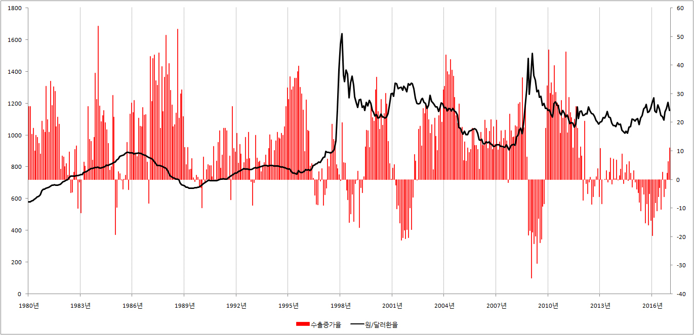
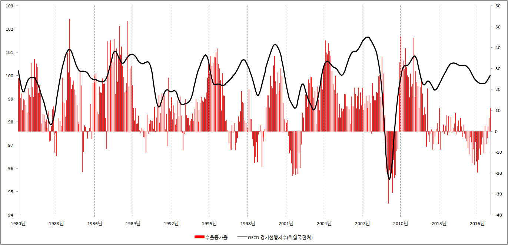

■ 환율하락이 주가에 미치는 영향은?
1.환율하락은 주가하락을 불러온다?
환율이 ‘1달러 = 1000원’에서 ‘1달러 = 500원’으로 하락했다고 합시다. 환율이 이렇게 하락하면 미국의 수입업자는 더 이상 한국 제품에 관심을 보이지 않습니다.
그 이유는 간단합니다. 옛날에는 1달러를 들고 한국에 오면 이쑤시개를 1000원 어치나 살 수 있었지만, 이제는 500원 어치 밖에 못삽니다. 따라서 한국산 이쑤시개를 더 이상 수입하지 않습니다. 그리고 구입선을 중국으로 돌립니다. 이렇게 해서 미국 수입업자들이 하나 둘 중국으로 떠나면 그만큼 우리나라의 수출이 줄어들게 됩니다.
환율하락이 수출 감소를 불러온다면 환율하락은 주가에 어떤 영향을 미칠까요?
너무나 쉬운 질문입니다. 환율하락으로 수출이 감소하면, 그만큼 판매량이 줄어들고, 판매량이 줄어드는 만큼 이익도 줄어듭니다. 그리고 이익이 줄어드는 만큼 주가가 하락을 하게 됩니다.
2.환율하락이 주가에 미치는 영향
환율이 하락하면 수출감소와 주가하락을 점치는 기사가 신문과 방송에 등장합니다. 그렇다면 진짜로 환율하락은 수출감소를 불러오고, 그 결과 주가가 하락 했을까요? 아래의 그래프를 한번 보십시오.
{kind=link}
그래프를 보면 환율이 하락하면 주가가 하락하는게 아니라 오히려 승천을 하고 있습니다. 도데체 왜 이런일이 일어난 것일까요?
3.환율하락이 주가상승을 불러오는 이유
환율이 하락하면 수출이 감소한다고 우리는 그동안 세뇌를 당해왔습니다. 하지만 아래의 그래프를 보면 환율이 하락하면 오히려 수출이 증가하고 있습니다.
※ 수출증가율과 원/달러 환율

{kind=link}
환율과 수출이 우리가 생각하는 것 만큼 찰떡 궁합이 아니라면 수출을 좌우하는 것은 무엇일까요? 아래의 그래프를 보면 그 답을 쉽게 알수 있습니다.
※ 수출증가율과 OECD경기선행지수

{kind=link}
세계 경제가 봄날을 맞이해 꽃길을 걷고 있으면 수출이 날개를 달고, 세계경제가 비실비실거리면 수출이 감소하는 것을 위의 그래프에서 쉽게 관찰할 수 있습니다. 즉 세계경제가 봄날이면 환율변화와 상관없이 수출이 증가하고, 세계 경제가 죽을 쑤고 있다면 환율변화와 상관없이 수출이 감소합니다.
따라서 우리는 이제 생각을 바꿀 필요가 있습니다. 환율이 하락하면 수출이 감소하는 것이 아니라, 수출이 잘되니까 온세상 달러가 대한민국으로 들어오고, 그 덕분에 달러가 흘러넘치니 달러의 몸값이 ‘1달러 =1,500원’ → ‘1달러 = 1,200원’ → ‘1달러 = 1,000원’으로 하락을 하게 된 것이라고 말입니다.
그리고 환율이 하락하면 주가하락을 예상할 것이 아니라 주가상승을 예상해야 합니다. 환율이 하락한다는 것은 그만큼 수출이 잘 되고 있다는 증거가 되고, 수출이 증가하면 그만큼 기업의 이익이 증가하고, 기업의 이익이 증가하면 주가가 상승을 할 수밖에 없기 때문입니다.
4. 관련 통계자료 조회 사이트
※ 원/달러 환율 : 한국은행 경제통계시스템 → 8. 국제수지 / 외채 / 환율 → 8.8 환율
※ 코스피 : 한국은행 경제통계시스템 → 6.증권/재정 → 6.2.주식거래 및 주가지수 → 6.2.2 주식거래 및 주가지수 → KOSPI 계열 → KOSPI_종가, 평균
※ 수출증가율 : 통계청 국가통계포탈 → 국가별 수출액, 수입액
※ OECD경기선행지수 : Composite leading indicator (CLI)